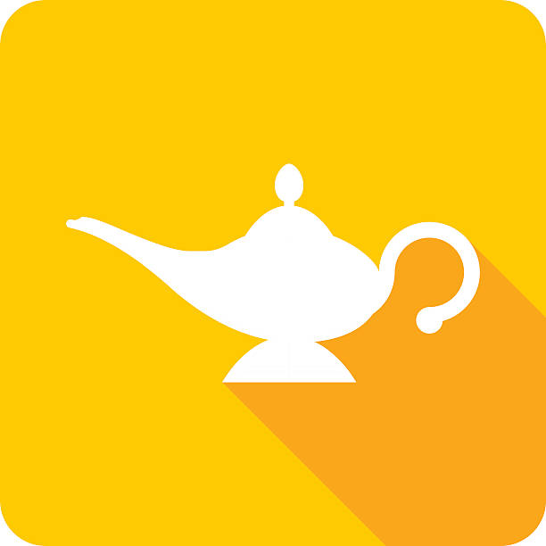

<md-toolbar class="ala-nav-toolbar" color="primary">
 
  <nav id="ala-nav">
    <md-card id="ala-nav-profile" [routerLink]="/profile" routerLinkActive="active">
      <md-card-header>
        <div md-card-avatar class="ala-nav-profile-image"></div>
        <md-card-title>אלדין</md-card-title>
      </md-card-header>
    </md-card>
    <button class="ala-nav-button" md-button [routerLink]="/feed" routerLinkActive="active">צפה בבקשות</button>
  </nav>

  <!-- This fills the remaining space of the current row -->
  <span class="fill-remaining-space"></span>

  <div id="ala-app-logo">
    <span class="ala-app-name">Aladin</span>
    
  </div>

</md-toolbar>

<router-outlet></router-outlet>
